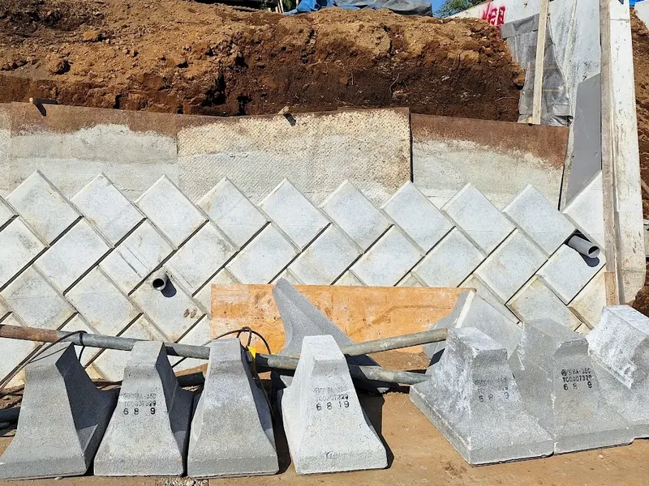
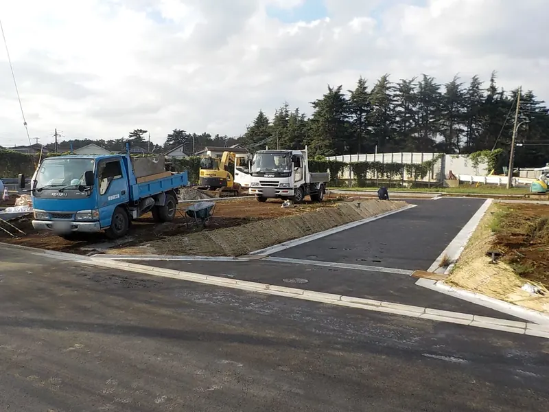
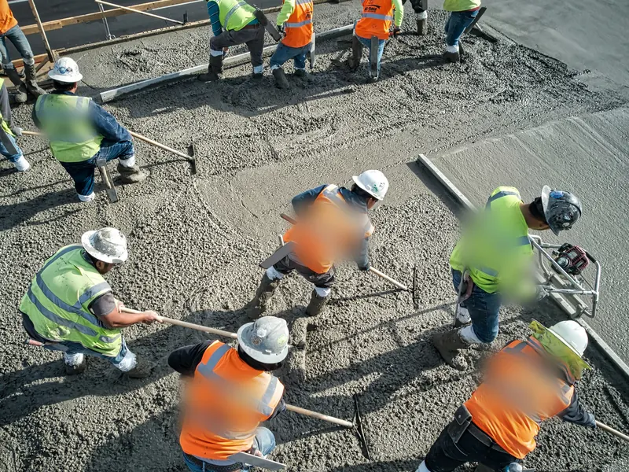
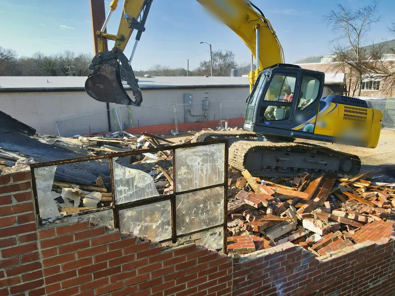
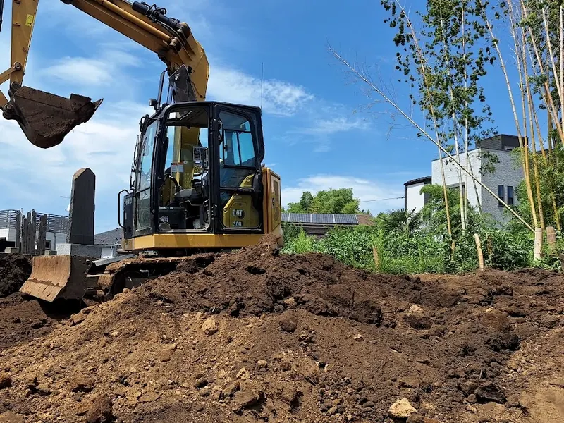

Civil Works土木・造成
土地をけずったり、土を盛ったりして平らにし、家や道をつくれる地面にします。土がくずれないように支える壁（擁壁）もつくります。
制作中の確認用ページです（検索には出ません）。確認中 の印がある所は、会社に確かめてから直します。

Civil Engineering綾瀬市の土木・舗装・外構・解体
造成・舗装・外構・解体。暮らしの土台になる地面の工事を、綾瀬市を中心に県央エリアでお受けしています。
写真はイメージです
01Service
家が建つ前の土地づくりから、道路や駐車場、家のまわりの仕上げ、古い建物の解体まで。

土地をけずったり、土を盛ったりして平らにし、家や道をつくれる地面にします。土がくずれないように支える壁（擁壁）もつくります。

道路・駐車場・通路を、アスファルトやコンクリートで仕上げます。古くなった舗装のやり直しもお受けします。

駐車場のコンクリート、ブロック塀、フェンス、門のまわりなど、家の外の工事です。

建物やブロック塀、古いコンクリートなどを取りこわして、何もない平らな土地にします。

地面を掘る、土を運ぶ、埋めもどす、くいを打つ。工事のはじめに欠かせない作業です。
地面のことなら、まずはお電話ください。内容をうかがって、できるかどうかをお答えします。
※ 写真はイメージです。
02Structure
道路や駐車場で目に見えるのは、いちばん上だけ。その下には、いくつもの層が重なっています。
下の層がしっかり固まっていないと、あとから沈んだり、ひびが入ったり、水たまりができたりします。
駐車場のコンクリートも同じです。まず、くだいた石（砕石）を敷いて固めます。その上に、ひび割れをおさえる鉄の網を入れて、コンクリートを流します。
※ 層の数や厚さは、場所や使い方で変わります。気になることは、工事の前に何でも聞いてください。
いちばん上の面。アスファルトやコンクリートで、車や人の重さと雨を受けとめます。
くだいた石を敷いて、機械で何度も押し固めた層。上からの重さを広げて、下へ伝えます。
いちばん下の地面。ここが弱いと、上をきれいにしても、あとで沈みます。
03For Home
駐車場、ブロック塀、庭や通路、物置の解体。家のまわりの地面の工事を、個人のお客様からもお受けしています。
お電話かフォームで、場所とご相談の内容をお知らせください。
ご都合のよい日に現地へうかがい、広さや地面のようすを確かめます。
工事の内容と金額をお出しします。見積りの費用は確認中
日程を決めて、工事をします。
仕上がりをご確認いただき、工事は完了です。
04For Business
ハウスメーカー・工務店・不動産会社のみなさまへ。宅地の造成から舗装、外構、解体まで、地面の工事をまとめてご相談ください。
工事の場所・内容・時期を、お電話かフォームでお知らせください。

05Recruit
土木作業のスタッフを募集しています。道路や駐車場、家が建つ前の土地。毎日だれかが通る場所をつくる仕事です。
先輩が現場で、一つずつ教えます。
重機などの免許・資格を、会社負担で取れます。
朝は会社に集まって、みんなで現場へ向かいます。
※ 2023年の募集の内容をもとにしています。確認中
採用情報を見る06Company
| 会社名 | 有限会社穂碩工業（すいせきこうぎょう） |
|---|---|
| 代表者 | 湊屋 隆幸確認中 |
| 所在地 | 〒252-1136 神奈川県綾瀬市寺尾西3丁目9番4号 |
| 電話 | 0467-76-2430 |
| 受付時間 | 確認中 |
| 設立 | 確認中 |
| 資本金 | 300万円 |
| 建設業許可 | 神奈川県知事許可 第068002号 |
| 許可の業種 | 土木工事業、とび・土工工事業、舗装工事業ほか確認中 |
| 事業内容 | 土木・造成工事、舗装工事、外構工事、解体工事、とび・土工工事 |
| 主な地域 | 綾瀬市を中心に、県央エリア確認中 |
| 法人番号 | 3021002048089 |
07Contact
工事のご相談・お見積り、採用のことなど、お気軽にどうぞ。
確認用のページなので、実際には届いていません。公開のときに、本当に届くようにします。